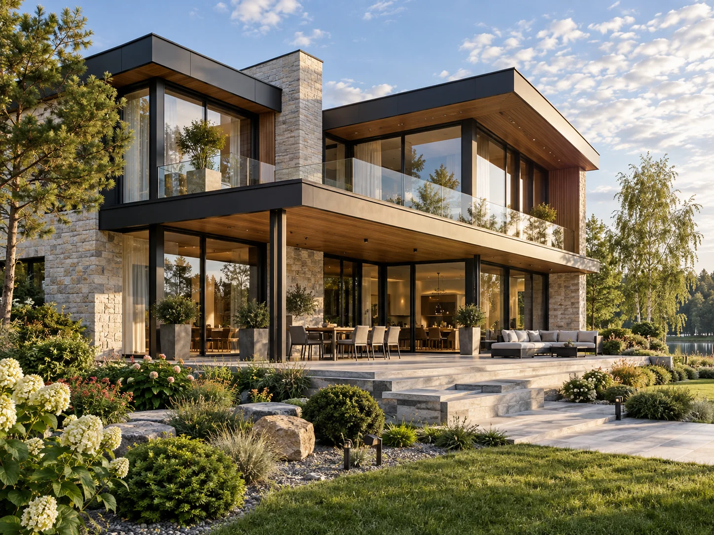

Не потеряться
в проектах.
Фильтры по площади и сценарию жизни, избранное, сравнение и планировка. Человек приходит к разговору с коротким списком, а не с общим «сколько стоит дом?».
Проверить подбор ↗Покупателю — понятный выбор и ощущение будущего дома. Вашей команде — обращение с контекстом и следующим действием.
FORMA LIFE — универсальная демонстрация. Адаптируем под ваши проекты, материалы и бренд.

Архитектура, которую хочется рассмотретьФильтры по площади и сценарию жизни, избранное, сравнение и планировка. Человек приходит к разговору с коротким списком, а не с общим «сколько стоит дом?».
Проверить подбор ↗Интерактивную 3D-модель можно повернуть, приблизить и рассмотреть сверху. Покупатель сам изучает фасады, остекление и террасу. Для вашего сайта подготовим модели по согласованным проектам.
Открыть обзор 360° ↗Проект, комплектация, пожелания и удобное время связи остаются в обращении. Менеджеру не приходится начинать знакомство заново.
Попробовать форму ↗Ниже — интерактивный пример будущей автоматизации. Не подключённая CRM и не реальная заявка. Нажмите кнопку и пройдите путь обращения.
Сохраняются выбранный дом, канал связи и пожелания.
Менеджер получает задачу. Срок реакции согласуется с вашей командой.
Время звонка и предмет разговора видны в карточке.
После материалов создаётся согласованный следующий шаг. Просрочки видны руководителю.
Контекст сохранён. Следующий шаг — назначить ответственного.
Эффект измеряем после внедрения: путь до заявки, время первого контакта и доля обращений с назначенным следующим шагом. Проценты роста заранее не обещаем.
На первой встрече выбираем направление дизайна и один приоритетный путь покупателя. Затем согласуем материалы и состав сайта. Автоматизацию внедряем отдельным этапом, исходя из того, как реально работает ваша команда.
Открыть весь концепт ↗Для ответа используйте канал, в котором получили эту презентацию. Сайт не отправляет сообщения.
Материалы концепта демонстрационные. FORMA LIFE не представляется действующим застройщиком. Условия обмена квартиры, комплектации и сопровождения включаются только после подтверждения услуг конкретной компании.